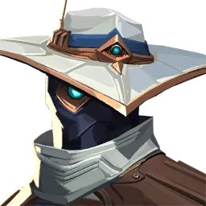
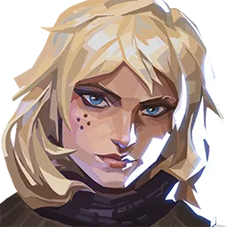
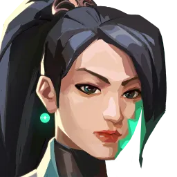
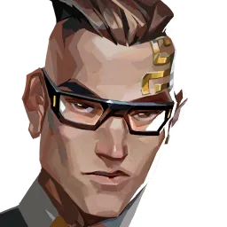
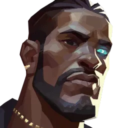
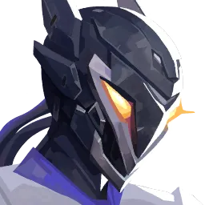

감시대









⚡ 변수 차단과 지역 점유에 특화된 마무리 투수
└ 직접적인 기동력은 낮으나 트랩을 통해 상대로부터 영역을 지켜내고,
적의 위치 정보를 수집하여 아군의 실시간 전략을 수립하는 수비의 핵심 역할군
🔹트랩·정보형 감시자 (사이퍼, 킬조이, 데드록)
· 설치형 덫과 함정 스킬을 활용해 상대의 진입 자체를 차단하고 진입 여부를 완벽히 파악
· 상대가 능동적으로 행동해야 하는 수비 및 스파이크 설치 후 상황에서 진정한 빛을 발함
· 확보한 영역을 바탕으로 팀에 안전한 선택지를 제공하며, 파일럿의 두뇌 회전과 노하우에 따라 성능이 극대화됨
🔹유지·교전형 감시자 (세이지, 체임버)
· 전형적인 수비 트랩형 요원과 달리, 자힐/부활(세이지)이나 자체 무기 활용(체임버) 등
하이브리드 성향을 띰
· 아군과 본대 영역의 유지력을 직접적으로 높여주거나 개인 피지컬을 통한 강력한
교전 캐리가 가능
· 수동성의 한계를 플레이어 개인의 역량으로 극복하며 라운드의 판도를 뒤집는 변수를 창출함